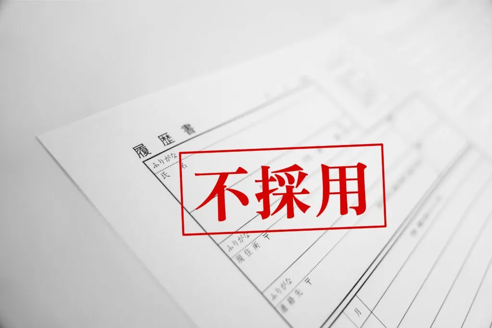
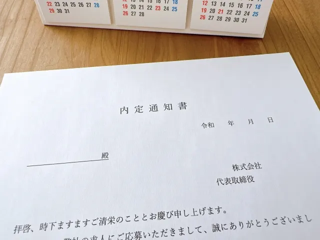

就活生が書類選考で落ちる6つの共通点。対策と受かるポイントも紹介


就職する際の一次審査で書類選考が実施されることは少なくありません。応募書類を一生懸命書いたのに「なかなか書類選考に通らない」という悩みを持っている就活生も多いのではないでしょうか。私は、企業の人事部で採用担当を30年にわたって勤めた経験がありますが、その中で気づいたことがあります。
実は、書類選考で落とされる人の書き方には共通点があるのです。この記事で紹介するポイントに注意することで、企業の目にとまりやすい応募書類が書けるようになります。書き方に悩んでいる人はぜひ参考にしてください。
書類選考で落ちる人の6つの共通点

書類選考では「何をやってきたのか」も大事ですが「人柄が伝わるかどうか」も大きなポイントです。応募書類を通じて「入社への熱意」と「あなたにどんな魅力があるのか」が伝わらなければ、担当者に好印象を与えることができません。
書類選考で不採用になる人には、次の6つの共通点があります。
- 書類が見にくい、不備がある
- 内容がわかりにくい
- 応募書類の使い回し
- 熱意が伝わらない
- ライバルと差別化できていない
- 人気企業ばかり受けている
ひとつずつ見ていきましょう。
1. 書類が見にくい、不備がある
応募書類はビジネス文書の一種です。誤字脱字はもちろん、あまりにも字が汚くて読みにくいとマイナス印象を与えます。よくある不備は次のようなものです。
- 提出期限を過ぎている
- 指定された形式で提出していない
- 写真を貼っていない、指定サイズではない
- 必要書類がそろっていない
- 修正液や修正テープを使っている
- 消せるボールペンを使っている
あなたが採用担当者だった場合、どんなに立派な人柄だったとしても、あきらかに雑な書類を見て、その人を採用したいと思うでしょうか？採用担当者は1日に何十枚もの履歴書やESなどの書類に目を通しているのです。書類を見たときに違和感があると、内容を読まずに不合格にされてしまう可能性があります。
2. 内容がわかりにくい
誤字脱字や書き方が汚いと内容がわかりづらく、書類を読み進めたくなくなります。見やすく書かなければ、採用担当者に書類を読んでもらえません。わかりにくい応募書類には次のような傾向があります。
- 誤字脱字がある
- 文字が汚い
- 要点がまとまっていない文章
- 略語を使っている
わかりにくい文章だと「基本的な文章力がない」という印象につながります。
 まつお
まつお最低限の文書力は身につけましょう。
3. 応募書類の使い回し
就活生によくありがちなのが「応募書類フォーマットの使い回し」です。何社も書類選考を受けるため、毎回書くのが面倒で、どの企業にも同じ内容の書類を送っている就活生は少なくありません。たとえば、コミュニケーション能力のある人材が欲しい企業に対して、粘り強さをアピールした内容になっていることがあります。
内容をよく確認しないまま、そのまま送ってしまったために内容がちぐはぐです。明らかに、企業が求める人物像ではないですよね。内容を読み返さずに提出してしまうと、このようなことが起こるのです。新卒はポテンシャル採用なので、企業の求める人物像でなければ評価につながりません。
応募書類は、企業がどのような人材を欲しがっているかに合わせて書くようにしましょう。
4. 熱意が伝わらない
採用担当者に興味を持ってもらうには「書類の中で熱意を伝えること」が重要です。たとえば、自己PRが500字で設定されていた場合、500字ギリギリまで書いている学生と半分くらいしか書いていない学生の場合、あなたならどちらと会ってみたいと思いますか？
まつお前者の学生のほうが熱意は伝わりやすくなり、採用担当者は会ってみたいと感じます。
文字数が多ければ良いと言うわけではありませんが、少ないと熱意が伝わらない傾向があります。ポイントは要点や伝えたいことを「わかりやすく書くこと」です。
5. ライバルと差別化できていない
よくあるケースは、就活サイトなどに記載してある表面的な会社情報だけを参考にして書いているパターンです。オリジナル性がないため、大勢の中に埋もれてしまい、自分らしさは感じられません。面接官は何十人もの応募書類を見ています。そのため、単なる情報の寄せ集めだけでは自分の意見や思いが反映されておらず読む気がなくなってしまうのです。
正直、読んでいて「また同じような内容だな…」と思うことはしょっちゅうです。これでは、しっかりと内容を読んでもらえず不合格になりますよね。
まつお自分の思いや考え方を盛り込むとライバルと差別化できます。
6. 人気企業ばかり受けている
就活生は人気企業や大手企業を受けたがる傾向にあります。一般的に知名度が高く、待遇面もよいので魅力を感じ「◯◯会社で働いている」という優越感がある人もいるでしょう。しかし、人気企業は倍率が数百倍を超えることも少なくありません。
選考倍率の高い企業ばかり受けていると、書類選考で落ちる確率も高くなります。ライバル学生も多く、その分優秀な人材も増えるためハードルは上がります。企業名や規模の大きさで判断するのではなく「自分がやりたいこと」を軸に応募先を探すことがポイントです。
まつおベンチャー企業やスタートアップ企業にも目を向けてみましょう。
書類選考で企業が見るポイント
書類選考に合格するためには、書き方のコツがあります。ポイントは「企業は何を見ているのか」をしっかりおさえて書くことです。自分の書類に次のポイントが含まれているか確認しましょう。
- 基本情報
- 最低限のマナーや文章力が備わっているか
- アピール内容が自社にマッチしているか
- 自社で活躍できる可能性があるか
ポイントを意識して書けば、見違える応募種類になりますよ。
基本情報
基本情報とは氏名や大学名・専攻・経歴・資格などです。書類選考は「不合格にする学生を決める」ために行います。そのため「条件を最低限満たしているか」を学生の基本情報で確認することも少なくありません。企業によっては基準を設けており、留年の有無や学歴でフィルターをかける場合もあります。
学歴フィルターは公表されていませんが、一般的に大手企業でかけられる傾向です。見分けるのは難しいですが、OB訪問で先輩社員に聞くことや、志望企業がどんな大学からの採用が多いのかを調べると傾向が見えることがあります。
まつおそもそも、応募資格があるかも必ず確認しましょう。
最低限のマナーや文章力が備わっているか
基本情報はもちろん、最低限のマナーや文章力が備わっているかも見ています。最低限のマナーが身に付いていない学生の印象は良くありません。優れた能力を持ちすばらしい経験をしてきたとしても、最低限のマナーが備わっていない書類では選考に通る可能性が低くなります。
マナーや文章力は社会人になってからも必要なスキルです。就職エージェントや学校の就活支援などで指導を受けられることも多いので、自信がない人は受けてみましょう。
アピール内容が自社にマッチしているか
企業は自社に合った学生を採用したいと考えています。そのため、あなたのアピール内容が企業にマッチしているかを見ます。マッチしていないと早期退職につながる可能性が高くなるからです。企業が求める人材の方向性に合っていて、将来活躍してくれる人材であるかを一番知りたいと思っています。
ミスマッチを防ぐアピールをするためには企業研究が重要です。面接で志望動機を聞かれることやアピールした内容について深掘りされることもあります。しっかりと企業研究をしていなければうまく質問に答えられません。
まつお深掘り質問をすると答えられないケースはとても多いです。単に企業情報を調べるだけ研究では不十分だと理解しましょう。
自社で活躍できる可能性があるか
企業は「あなたのアピール内容が会社でも発揮できるか」という視点で見ています。新卒採用は社会人としての実績がないため、スキルは求められていません。そのため、過去のエピソードやそこで発揮した強みから、今後活躍できる可能性があるかを判断します。
たとえば「学生時代はサッカーに打ち込みました」だけでなく、そこから何を学び、今後にどう生かしていきたいのかまでアピールできると好印象です。うまく仕事に絡めて書きましょう。
まつお新卒はポテンシャル採用なので、仕事に転用できる考え方が重要です。
書類選考で落ちないために最低限やるべき5つの基本ポイント
書類選考では、まずは読んでもらうことが大切です。そのためには基本ポイントを押さえましょう。応募書類の作成において必ずやるべき5つのことを紹介します。
- 最低限のマナーやルールを守る
- 経験の棚卸
- 自己分析をする
- 業界・企業研究をする
- 応募書類は業界・企業研究で差がつく
書類選考の通過率が上がるので、ぜひ実践してください。
1. 最低限のマナーやルールを守る
書類にミスや違和感があるとそれだけでマイナスの印象になってしまいます。抜け漏れなくミスを防ぐために、次のことをチェックしましょう。
- 提出締め切りに間に合っているか
- 書類に空欄が無いか
- 書類に略語を使っていないか
- 文章量が少なくないか・オーバーしていないか
- 誤字脱字がないか
- 必要書類はすべてそろっているか
- 押印してあるか
- 日付に誤りがないか
- 提出先企業に合ったアピール内容になっているか
- 写真のサイズに問題が無いか
- 写真は清潔感のあるものか
どれもすべて大事なので、チェックリストを作って確認していくとよいでしょう。
2. 経験の棚卸し
単にこれまでの経験を記載するだけでは意味がありません。どんな経験を積んできて、そこから何を学んだか、どのように取り組み、どのような成果を出したかが重要です。実績などは具体的な数字を記載すると説得力があるので、数字で書けるものはしっかりと記載しましょう。
たとえば「これまで統制がとれていなかったチームを、ひとつにまとめて全国大会でベスト4まで進出した」など、具体的なエピソードを交えて実績を数字で書くと面接官の目を引きやすくなります。
まつお一度、自分の経験を棚卸しして、整理しておくとよいでしょう。
3. 自己分析をする
応募書類には「自分の性格や過去の経験」「強み、スキル」などのアピールが大切です。自己分析をすることによって、自分の魅力が伝わる文章になります。志望動機も重要ですが自己アピールも必須です。魅力が伝わらない文章は面接官の印象に残りません。
選考に落ちる応募書類は自己分析が不十分で、表面的な自己PRや強みしか書けていないことが特徴です。
まつお自己分析が苦手なら、誰かに聞いてみるのもおすすめです。知らなかった自分の強みがわかることもあります。
4. 業界・企業研究をする
その企業に合った書類を作るためには、業界や企業の分析が欠かせません。より深く分析することで面接官に響くアピールができます。面倒だからといって、すべての企業に同じ内容を使い回すのは絶対にいけません。研究のやり方は以下を参考にしてください。
業界研究のやり方
- 業界地図を見る
- 業界に携わる経営者の書籍を読む
- 業界に関するニュースをチェックする
- 業界団体のホームページを見る
- 合同説明会に参加する
企業研究のやり方
- 就活四季報を見る
- 企業HPを見る
- インターンシップに参加する
- OB・OG訪問をする
- 会社説明会に参加する
5. 応募書類は業界・企業研究で差がつく
業界・企業研究でライバルに差をつけるためには、志望企業の製品を購入して使うことやサービスを受けてみることもおすすめです。実際に体験することで「どのように感じ、それが志望につながったのか」をリアルに伝えることで、あなたへの好感度が上がることもあります。
たとえば、志望企業の製品が他社のものと比較して優れているところなどを伝えると効果的です。業界研究がしっかりできているというアピールができると同時に、熱意も伝わります。
自分の価値観や人柄が伝わる内容にする

応募書類は、自分の価値観や人柄が伝わる内容にしなければなりません。自己PRで強みをアピールする人は多いのですが、それだけで終わってしまっている人が少なくありません。アピールと一緒に、その強みの根拠となる経験を具体的に書かなければ自分の価値観や人柄は伝わりにくくなります。
採用担当者はあなたのことを知りません。応募書類だけで自分の価値観や人柄が伝わる内容にするには「背景」「事実」「学び」の3つの要素が必要です。たとえば、部活を頑張った結果「何を経験できたのか」などを盛り込むと評価を得られやすくなります。
【自分の価値観や人柄が伝わる3つの要素】
背景：どのような環境や思いだったのか
事実：どのような結果になったのか
学び：今後に活かせる学びは何か
まつお「なぜ強みだと感じたのか」を具体的なエピソードを交えて書ければ好印象となり会ってみたいと思います。
書類選考の通過率をアップさせるための差別化のポイント

書類選考を通過するためには、ポイントを押さえることに加えて、他の応募者と差別化することが大切です。以下に気をつけて書きましょう。
- 回答の「書き出し」と「締め」を工夫する
- ESは表現にオリジナル性を持たせる
- 履歴書とESの違いを理解する
- 一次締め切りで応募する
- 郵送の場合は送付状を添える
- 第三者に添削をしてもらう
ひとつずつ解説します。
回答の「書き出し」と「締め」を工夫する
文章は書き出し部分と締めの部分のインパクトが大きいことを覚えておきましょう。人は、最初と最後に与えられた情報が記憶に残りやすいためです。たとえば「私の強みはコミュニケーション能力です」と書くより「私は初対面の人とも協力できるコミュニケーション能力が強みです」の方が印象に残ります。
まつお採用担当者は「はじめての人でも問題なく話せそうな人物だな」と感じるでしょう。
ESは表現にオリジナル性を持たせる
履歴書はシンプルに記載すべきですが、ESは表現にオリジナル性を持たせると採用担当者の印象に残りやすくなります。手書きのESなら自由記述欄に絵や写真を加えることも好印象で、強みなどのアピールポイントは箇条書きにすると見やすくなります。
1文を短くすることや表現を少し工夫するだけでも、採用担当者の目に留まりやすくなるのでおすすめです。
履歴書とESの違いを理解する
履歴書とESの違いを理解し、それぞれの目的に合った書き方をする必要があります。両者には次のような違いがあるので覚えておきましょう。
履歴書：人事データとしても使う公的な書類
→過去の経歴を簡潔に伝える
ES：「どんな人物なのか」を判断する書類
→熱意や将来性をアピールする
一次締め切りで応募する
一次締め切りや二次締め切りなど、複数の応募締め切りを設けていることがあります。そのため「また後でも応募できる」と思う人もいますが、これはNG行為です。志望度の高さや熱意を伝えるためにも、一次締め切りで応募するようにしましょう。
二次締め切りで応募すると「第一志望で不合格になったから応募してきた」と思われる可能性もあります。採用人数は決まっているため、早い締め切りで優秀な学生が集まれば、残りの募集枠は難易度が上がることも少なくありません。また、場合によっては二次募集がされないこともあり得ます。
まつお一次募集で応募してくる人は、入社意欲の高い人が多く、採用担当者も熱の入れ方が違います。
郵送の場合は送付状を添える
最近はネット応募が多い傾向ですが、郵送で応募書類を送るように指定されている企業もあります。郵送で書類を送るときは送付状を添えましょう。送付状を添えたからといって、それが合格につながるとは限りませんが「礼儀正しい学生」として、少しでもプラス評価を得られる可能性があります。
まつおビジネスでも添え状は必須のため「マナーを知っている」と判断されることが多いです。
第三者に添削をしてもらう
書類を作成したら、友人や家族などに添削してもらうことがおすすめです。第三者からの視点を入れることで、自分では気づかなかった不備が見つかることや、わかりにくい点などを指摘してもらえます。知り合いに見てもらうのは気が引けるという人は、就職エージェントの添削サービスも検討してみましょう。
まつお他人から自分の文章を添削してもらうことは「自分では気づかないクセ」などがわかるためぜひおすすめします。
それでも書類選考に落ち続けてしまう人の対処法

「どうしても書類選考を突破できない」と悩んでしまう就活生もいるかもしれません。そのようなときは一度視野を広げて、受けている業界や企業を見直してみましょう。応募している企業だけがあなたに合った企業とは限りません。大手企業や有名企業などは人気が高い傾向にありますが、その分倍率も高くなります。しかし、ニッチな商品を販売する企業は知らない就活生も多く、倍率が低いことも少なくありません。
視野を広げると、新たな自分の強みや自分に合っている企業が見つかることがあります。大学のキャリアセンターや、就職エージェントを利用することも効果的です。あなたの書類を多角的な視点から落ちた理由を分析し、改善を手伝ってくれます。
基本を押さえたうえで差別化をすること

書類選考で落ちる人には共通の理由があります。その理由がわからないまま活動しても、合格には結びつきません。理由を知り、基本を押さえたうえで差別化をすることが重要です。採用担当者は書類で何を見ているのかを理解して対策をしましょう。書類選考で落ちないために、最低限やるべきことや差別化のコツを押さえて、書類選考を突破しましょう。
書類選考対策に自信がない場合は就職支援サービスの利用がおすすめです。UZUZは初めての就活で不安という学生一人ひとりに寄り添ったサポートをしてくれます。来社不要でビデオ通話や電話でカウンセリングが「無料」で受けられ、ESの添削や面接対策も苦手を克服するまで何回も徹底的に指導してもらえるのが特徴です。
書類の作成に不安がある人はぜひ登録してみてください。
採用・人事やAI活用のご相談を受け付けています
記事の執筆、採用支援、AI導入支援など、まずはお気軽にご相談ください。
ご相談はこちら